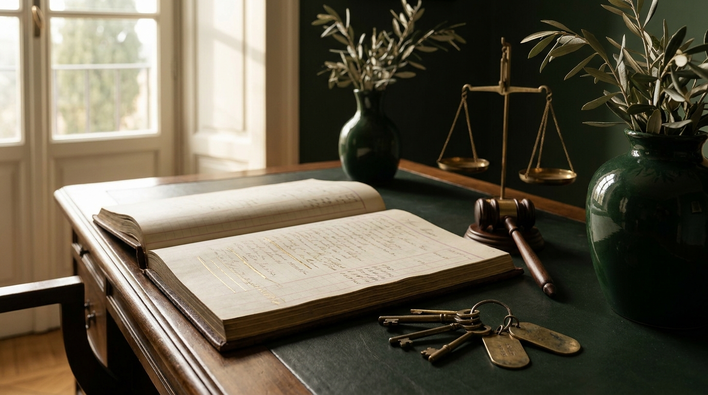

L'amministratore di condominio risponde dei debiti se non comunica l'elenco dei morosi
Quando un creditore del condominio non viene messo in condizione di sapere chi sono i condòmini morosi, l'amministratore che ostacola il recupero può rispondere in proprio del danno. Il tema, consolidato dalla giurisprudenza di legittimità sull'art. 63 disp. att. c.c., riguarda chi amministra, chi vanta crediti e chi paga regolarmente le quote.

Il problema: la lista morosi condominio e chi può vederla
Il condominio non ha un patrimonio autonomo distinto da quello dei singoli partecipanti. Quando un fornitore o un creditore (ad esempio un'impresa che ha eseguito lavori) ottiene un titolo esecutivo contro il condominio, deve sapere quali condòmini non hanno versato la propria quota per poterli aggredire.
*Titolo esecutivo*: è l'atto (una sentenza, un decreto ingiuntivo definitivo) che consente al creditore di procedere con l'esecuzione forzata, cioè il pignoramento.
È qui che entra in gioco l'amministratore. Se rifiuta o omette di comunicare l'elenco dei morosi, ostacola di fatto il recupero del credito. E può esserne chiamato a rispondere.
Inquadramento normativo
L'art. 63, comma 2, delle Disposizioni attuative del Codice civile stabilisce che i creditori non possono agire contro i condòmini in regola con i pagamenti se non dopo aver escusso i morosi. È il cosiddetto beneficio di preventiva escussione: prima si aggredisce chi non ha pagato, poi — solo in caso di incapienza — gli altri.
Da questa norma deriva, per necessità logica, l'obbligo dell'amministratore di rendere conoscibile al creditore chi siano i morosi. Va detto con precisione: l'articolo non contiene una previsione testuale che imponga espressamente la comunicazione dell'elenco. Tale obbligo è frutto dell'elaborazione giurisprudenziale, in particolare di Cass. n. 18331/2014, che ha riconosciuto come il creditore abbia diritto a ottenere i dati necessari per esercitare l'azione nei limiti dell'art. 63.
La fonte del dovere dell'amministratore si rinviene poi nel rapporto di mandato (artt. 1129 e 1130 c.c.), che gli impone di gestire la cosa comune con diligenza e di curare anche i rapporti con i terzi. Va inoltre richiamato il principio della parziarietà delle obbligazioni condominiali, affermato da Cass. SU n. 9148/2008: ciascun condomino risponde dei debiti comuni in proporzione alla propria quota millesimale, e non solidalmente. Per questo l'individuazione del singolo moroso e della sua quota è decisiva per il creditore.
Il fondamento della responsabilità dell'amministratore
La responsabilità che può colpire l'amministratore inadempiente ha natura tipicamente extracontrattuale nei confronti del creditore terzo (art. 2043 c.c.): tra amministratore e fornitore non esiste un contratto, ma l'amministratore, con la propria condotta omissiva, può ledere il diritto di credito altrui. Nei confronti del condominio, invece, la responsabilità resta di tipo contrattuale, in quanto fondata sul mandato.
Perché la responsabilità si configuri non basta l'omissione. Occorre:
- un comportamento colpevole (rifiuto o ingiustificata inerzia nella comunicazione);
- un nesso causale tra l'omissione e il mancato recupero del credito;
- la prova di un danno, che spesso assume la forma della *perdita di chance* di recupero. Il creditore deve cioè dimostrare che, con l'elenco aggiornato dei morosi, avrebbe avuto concrete possibilità di soddisfarsi.
L'onere di provare questi elementi grava sul creditore che agisce. Non è quindi un automatismo: l'amministratore risponde se la sua condotta ha effettivamente compromesso il recupero.
Implicazioni pratiche
Per l'amministratore, il messaggio è netto: invocare presunti obblighi di riservatezza verso i condòmini, in un contesto in cui la legge subordina l'azione del creditore proprio alla conoscenza dei morosi, non costituisce giustificazione idonea. Il rendiconto e la situazione dei pagamenti sono dati che, nei limiti dell'art. 63, devono essere resi accessibili al creditore legittimato.
Per il creditore, la sentenza che ottiene contro il condominio non è sufficiente: serve attivarsi tempestivamente per ottenere l'elenco e documentare l'eventuale ostruzionismo dell'amministratore.
Per il condomino in regola, il quadro è di tutela: la preventiva escussione dei morosi lo protegge da aggressioni immediate.
Cosa fare in concreto
Se sei amministratore:
- Tieni aggiornata e documentata la posizione dei pagamenti di ciascun condomino.
- Rispondi alle richieste motivate dei creditori muniti di titolo, fornendo l'elenco dei morosi e le rispettive quote.
- Conserva traccia scritta di ogni comunicazione, per dimostrare la diligenza.
Se sei creditore del condominio:
- Richiedi formalmente all'amministratore l'elenco dei morosi, con PEC o raccomandata.
- Documenta il rifiuto o l'inerzia: sarà la base per provare il nesso causale e il danno.
Se sei condomino:
- Verifica di figurare tra i condòmini in regola, conservando le ricevute dei versamenti.
Consigliamo, in tutti i casi, di valutare la posizione con un professionista prima di agire o di rifiutare richieste di accesso ai dati.
Contributo informativo a cura di Tamburro & Partners - Avv. Giuseppe Tamburro. Non costituisce parere legale.
Ogni condominio ha una storia a sé.
Se gestisci un'amministrazione e vuoi un confronto su una specifica questione condominiale, scrivi allo studio. Ti rispondiamo entro un giorno lavorativo.